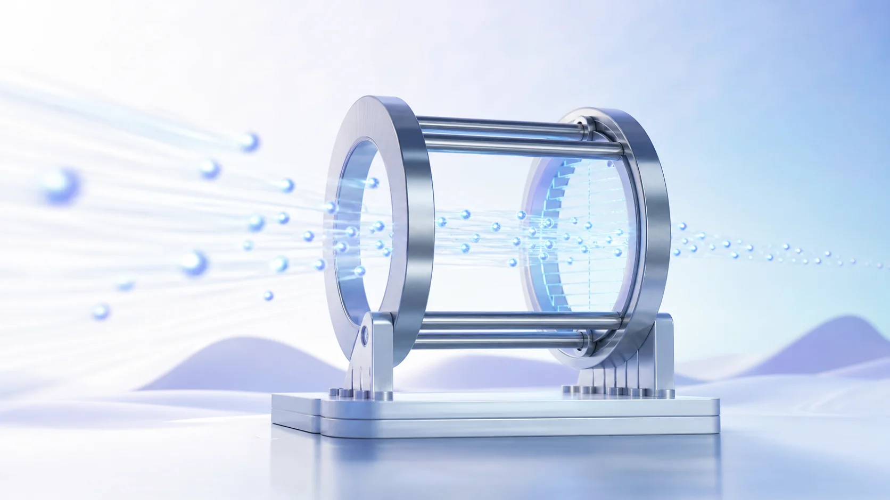
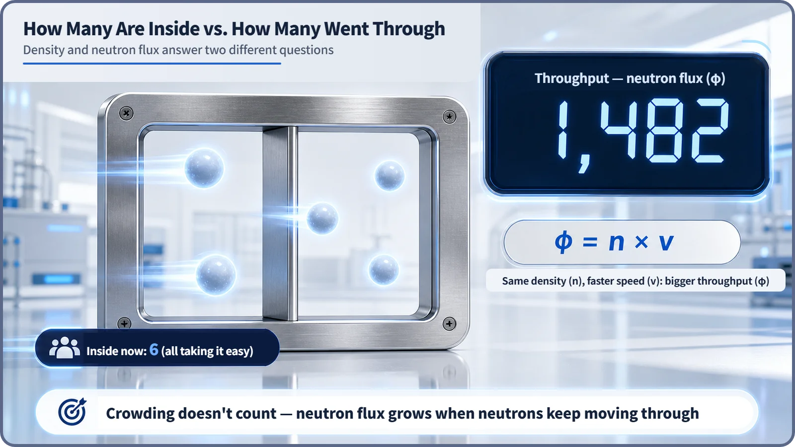
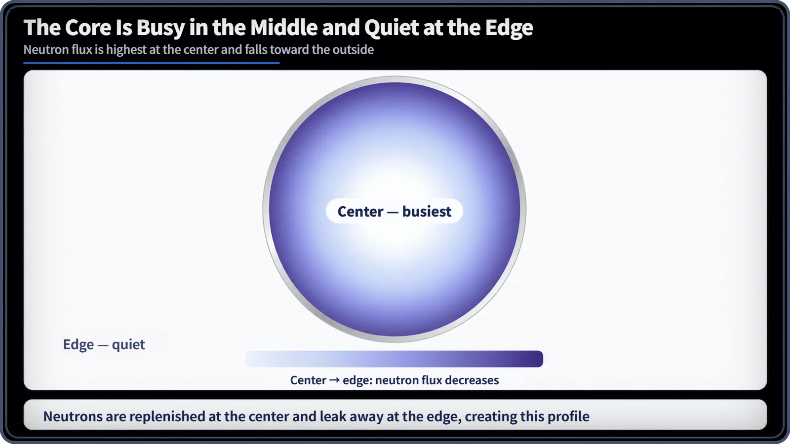

Neutron Physics & the Core · 077
Same Crowd, Busier Gate — What Neutron Flux Really Measures
Headcount and traffic are different numbers. Reactor physics cares about the traffic.

Neutron flux measures how actively neutrons travel through a place, not how many are sitting there. It equals neutron density times average speed (φ = n × v), it sets how often reactions such as fission can happen, and in a reactor core it is generally highest at the center and lower toward the edge.
Same crowd, busier gate
Picture the turnstiles in a busy subway transfer corridor. At one gate only a few people are standing around, yet the counter keeps ticking up nonstop. At another, a crowd has gathered, but the counter barely moves. Going by headcount, the second gate looks busier, but far more people may actually be getting through the first.
That mismatch is the first key to neutron flux. "How many are in this spot?" and "How many pass through this spot?" are completely different questions.
The counter counts traffic, not people
A counter above a turnstile doesn't count how many people are inside the gate at this instant. It counts how many passed through in a unit of time, say one minute. If people stood still inside, the counter would hardly move however many there were; a few people hurrying in and out make it climb quickly.
Inside a reactor, neutrons born in fission are constantly on the move. The number of neutrons in a space is the neutron density. Neutron flux tells you how actively neutrons are moving through that space. At the same density, faster neutrons mean a larger flux: density is the people inside the gate, flux is the count on the counter.

Why does reactor physics care more about travel than headcount? Fission and every other neutron reaction happen when a moving neutron passes close to a nucleus and hits it, not because a neutron sits still. The chances for a reaction scale with how much travel happens in a place, so flux, not density, is the key measure.
In numbers: flux = density × speed
φ (neutron flux) = n (neutron density) × v (average neutron speed)
| Symbol | Meaning | Turnstile picture |
|---|---|---|
| n | neutrons in a unit volume, such as 1 cm³ | people inside the gate |
| v | average neutron speed | how fast people move through |
| φ | neutrons crossing a unit area per unit time, in neutrons/(cm²·s) | the count on the counter |
The same crowd (n) moving faster (v) gives a bigger φ. As flux grows, so does the number of reactions, including fission, at that spot. More precisely, the reaction count is proportional to flux times a value describing how readily the reaction happens, the macroscopic cross section, which is a topic of its own.
Crowded in the middle, quieter at the edges
Neutron flux is not the same everywhere in the core. It is generally highest at the center and falls off smoothly toward the outer edge, like a town square that bustles in the middle and thins out toward the exits.
At the center, neutrons keep flowing in from all sides and fission constantly replaces the ones that are lost. Near the edge, a larger share of neutrons escapes from the core altogether (leakage), and relatively few arrive from outside to replace them, so the flux drops. The exact shape in a real power-plant core depends on the fuel-loading pattern, control-rod positions, the reflector and the design; the general trend is what matters here.

How far a neutron travels between collisions, and the theory that calculates this spreading precisely, diffusion theory, deserve their own discussion.
Flux is not crowding, and not temperature
It's tempting to think the spot with the most neutrons crowded together is the dangerous one. The key quantity is flux, and high flux means neutrons are actively traveling through a place, not piled up motionless. The flux map is also easy to confuse with the temperature map, since both often run high in the middle, but flux describes how much neutrons travel and react. It is not temperature.
Designers adjust the fuel-loading pattern, the reflector and control-rod placement so that flux doesn't pile up at one spot and is spread as evenly as possible (flattening), because where flux concentrates, heat generation concentrates too. During operation, neutron detectors monitor the flux in real time so the power level and power distribution stay within design limits; the detector types and locations differ by reactor design.
Key takeaways
Neutron flux describes how actively neutrons travel through a spot, not how many are there. φ = n × v, and the larger it is, the more chances for reactions such as fission. In a core it is highest at the center and lower toward the edge, and keeping it even is one of the basic things reactor design and operation manage.